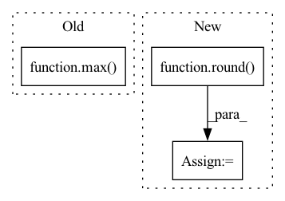

Pattern ID :38384
Before Change
actual_width = old_image.shape[1]
actual_height = old_image.shape[0]
max_val = max( actual_width, actual_height)
if max_val >= max_photo_resolution:
downscale_factor = max_val/max_photo_resolution
new_width = round(old_image.shape[1]/downscale_factor)After Change
return "temp.png"
else:
new_width = round(old_image.shape[1])
new_height = round( old_image.shape[0])
resized_image = cv2.resize(old_image,
(new_width, new_height),
interpolation = cv2.INTER_LINEAR)
cv2.imwrite("temp.png", resized_image)In pattern: SUPERPATTERN
Frequency: 4
Non-data size: 3
Instances Fragment ID: 109698873
Project Name: djdefrag/qualityscaler
Commit Name: 66b6f13eca96c3a97a48871850754b01b7403ab2
Time: 2022-06-02
Author: jjluca96@gmail.com
File Name: QualityScaler.py
M Class Name: AnonimousClass
N Class Name: AnonimousClass
M Method Name: resize_image_to_show(1)
N Method Name: resize_image_to_show(1)
M Parent Class:
N Parent Class:
M File Name: QualityScaler.py
N File Name: QualityScaler.py
M Start Line: 328
M End Line: 346
N Start Line: 320
N End Line: 347
Before Change
assert mode in ("down", "same", "up", "out")
conv_conf = conv_conf[mode]
branch_channels = max( max(in_channels, out_channels) // bottleneck_divisor, 1)
self.activation = instantiate(activation)
self.bias1a, self.bias1b, self.bias2a, self.bias2b, self.bias3a, self.bias3b, self.bias4 = (After Change
assert isclose(max_channels % bottleneck_divisor, 0), (
f"residual channels: {max_channels} not divisible by bottleneck divisor: {bottleneck_divisor}!"
)
branch_channels = max(round( max_channels / bottleneck_divisor) , 1)
self.activation = instantiate(activation)
Fragment ID: 109698876
Project Name: sara-nl/2d-vq-ae-2
Commit Name: ce0eca747fa8b5a1b49e3b22a958a5c6d059ec66
Time: 2021-10-19
Author: robertjan.schlimbach@gmail.com
File Name: vq_ae/layers/conv_block.py
M Class Name: PreActFixupResBlock
N Class Name: PreActFixupResBlock
M Method Name: __init__(7)
N Method Name: __init__(7)
M Parent Class: nn.Module
N Parent Class: nn.Module
M File Name: vq_ae/layers/conv_block.py
N File Name: vq_ae/layers/conv_block.py
M Start Line: 142
M End Line: 142
N Start Line: 143
N End Line: 147
Before Change
scores_matrix = pad_sequence(scores_list, batch_first=True, padding_value=-np.inf) // nusers x items
// get topk
_, topk_index = torch.topk(scores_matrix, max( self.topk) , dim=-1) // nusers x k
return topk_index
After Change
for metric, value in zip(self.metrics, result_list):
for k in self.topk:
key = "{}@{}".format(metric, k)
metric_dict[key] = round( value[k - 1], 4)
return metric_dict
def _check_args(self):
Fragment ID: 109698882
Project Name: rucaibox/recbole
Commit Name: df66b6285fec567d1f3ca0d6ee9d9ceb71f792b6
Time: 2020-10-20
Author: 1337990880@qq.com
File Name: recbole/evaluator/topk_evaluator.py
M Class Name: TopKEvaluator
N Class Name: TopKEvaluator
M Method Name: evaluate(3)
N Method Name: evaluate(4)
M Parent Class: AbstractEvaluator
N Parent Class: AbstractEvaluator
M File Name: recbole/evaluator/topk_evaluator.py
N File Name: recbole/evaluator/topk_evaluator.py
M Start Line: 38
M End Line: 57
N Start Line: 69
N End Line: 80
Before Change
def video_need_tiles(frame, tiles_resolution):
img_tmp = image_read(frame)
image_resolution = max( img_tmp.shape[1], img_tmp.shape[0])
needed_tiles = image_resolution/tiles_resolution
if needed_tiles <= 1:
return FalseAfter Change
return False, 0
else:
if (n_tiles % 2) != 0: n_tiles += 1
n_tiles = round( sqrt(n_tiles * multiplier_num_tiles))
return True, n_tiles
def image_need_tiles(image, tiles_resolution): Fragment ID: 109698871
Project Name: djdefrag/qualityscaler
Commit Name: 9c1d7dcd4415b7434c57e7e15feac063a4962b21
Time: 2023-04-08
Author: jjluca96@gmail.com
File Name: QualityScaler.py
M Class Name: AnonimousClass
N Class Name: AnonimousClass
M Method Name: video_need_tiles(2)
N Method Name: video_need_tiles(2)
M Parent Class:
N Parent Class:
M File Name: QualityScaler.py
N File Name: QualityScaler.py
M Start Line: 242
M End Line: 249
N Start Line: 230
N End Line: 242